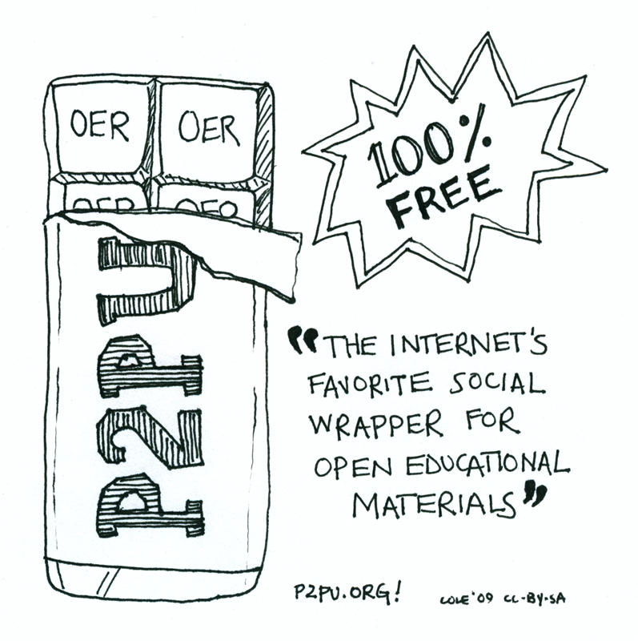

P2PU
The social wrapper for Open Educational Resources
This page is intended as both a starting point to learn about P2PU and the story behind it, and also a personal take on the role of P2PU in the broader context of open education and open social education. It is my space for reflecting on the challenges we are facing, and making sense of them as we go along. I am writing in my personal capacity here and not everything necessarily represents the consensus of the P2PU community, although I hope that the two mostly overlap. I started focusing (almost) full-time on P2PU in late 2008 and received a Shuttleworth fellowship that has allowed me to work on open collaborative resources since June 2009.
Update — P2PU in 2010 / Ideas for 2011
I made a prezi screencast to talk about some of the things we have been working on in the last few months and sketch out plans for 2011. It ended up being longer than intended – I realized that we have been doing a lot of things that should be included – and I will split this into two separate presentations in the next few weeks. For now, the first half (roughly) covers the work of the past few months, and the second half of the video focuses on ideas around assessment, certification, and badges.
The social wrapper for Open Education Resources

History
P2PU is the brainchild of Delia Browne, Neeru Paharia, Stian Haklev, Joel Thierstein and Philipp Schmidt. While we pushed the car to get the engine puttering, it’s now being piloted and maintained by a small crew of extremely talented and committed people.
We announced the pilot phase during the Open Ed conference in Vancouver (a recording of the session, which provides more info on the types of courses and has a number of great questions from the audience is here on ustream) and started our first round of courses on 09/09/2009. Check out these nice graphics of sign-up statistics on our old site (courtesy of John Britton).
Berlin 2009 – Community Meeting

After the pilot phase, we spent four days in Berlin to put our heads together and debate what worked and what didn’t and set out our strategy for 2010 (our worldcup year). In line with P2PU values, all notes from the meeting are available online.
- P2PU blog on Berlin workshop
- Jane Park’s post on The future of P2PU (great video!)
- Notes from the workshop
Barcelona 2010 – Community Meeting

The Context – Opportunities for disruptive innovation
This is a moment of great opportunity for innovation in higher education. A number of factors create the space for initiatives like P2PU to experiment with a real paradigm shift – changing what we expect from education and how it can be provided to more people. First the enablers: (1) There is a wealth of very high quality free and open content; and (2) the Internet connects us with millions of other people to learn with. While these two factors create the infrastructure for innovation, there are three challenges to higher education that projects like P2PU can help address.
- A – Demand for higher education especially in developing countries is starting to outstrip supply and as Indian and Chinese middle classes grow, traditional institutions and modes of teaching and learning cannot scale fast enough.
- B – Secondly, in developed countries, the cost of higher education is excluding more and more people.
- C – In addition, we should ask hard questions about the quality of education that our current institutions provide. Skills needed to succeed in the workplace are outdated faster and faster. Lifelong learning is a reality and it best comes in short focused blocks. And finally, there are calls for education to foster each person’s individual strengths and qualities, and focus on meta-skills expected to be particularly valuable in a knowledge driven society, such as problem solving, leadership, and communication; and these are not routinely part of a University education.
Learning from open source
This has been a recurring theme and practice at P2PU. We often check how things work in open source software communities and how we could apply lessons from open source to P2PU. In my first piece on the topic, I wrote about the role of mentors, and what we can use from mentorship arrangements in open source software. Since then, the idea of mentorship at P2PU is not only part of how the learning works, but has also taken hold as a way to bring more people into the community. At the Berlin workshop, we decided on an orientation process that is designed to help new course organisers, design and plan their courses. Part of the orientation is a mentorship component, where experienced course organisers are available to answer questions and provide feedback.
- Learning from open source – Mentorship
- Learning from open source – Governance, community, and culture
Media (and other) attention – the power of public commitment
P2PU is clearly hitting a nerve (riding a wave). The attention from both professional media as well as the blogosphere has been tremendous and helped us pick up speed much faster than we could have hoped for. We are using google alerts to keep track of what people write about us and you can find more than 80 blog posts and articles collected in our diigo bookmarks group. A few good places to start:
- The original article in The Chronicle of Higher Education, and
- the Fast Company article on transforming higher education
Getting a lot of attention early on also made us realise the power of “public commitment”. When Jeff Young wrote the first article about us in The Chronicle of Higher Education, P2PU was little more than an idea shared by a small group of people. We had been talking about “doing something” for a while, but once we had nailed our colors to the mast so publicly there was no turning back. Had we waited until our web-site was ready, we would probably still be planning. Since it worked so well, we have been using the “public commitment” method for other things as well – including the tasks we all set ourselves during the Berlin workshop.
Certification / Accreditation
Learning for learning’s sake is a luxury that few can afford. The social learning practices that make up P2PU are only part of the puzzle. The question of accreditation, and especially alternative accreditation is the ultimate challenge to hack education. Below are some notes on the broader topic. I have also just written a series of blog posts about what is going on at P2PU. This is the most recent one about our partnership with the Mozilla Foundation and some thoughts on assessment; and here is more information about our upcoming workshop in 2010, sponsored by the Shuttleworth Foundation.
- Harvard University Berkman Center Free Culture Research Workshop – Essay on commons-based peer production and education
- International Review of Online and Distance Learning – Peer-To-Peer Recognition of Learning in Open Education